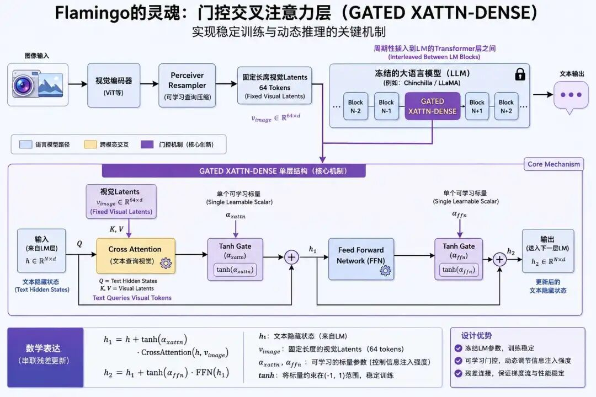
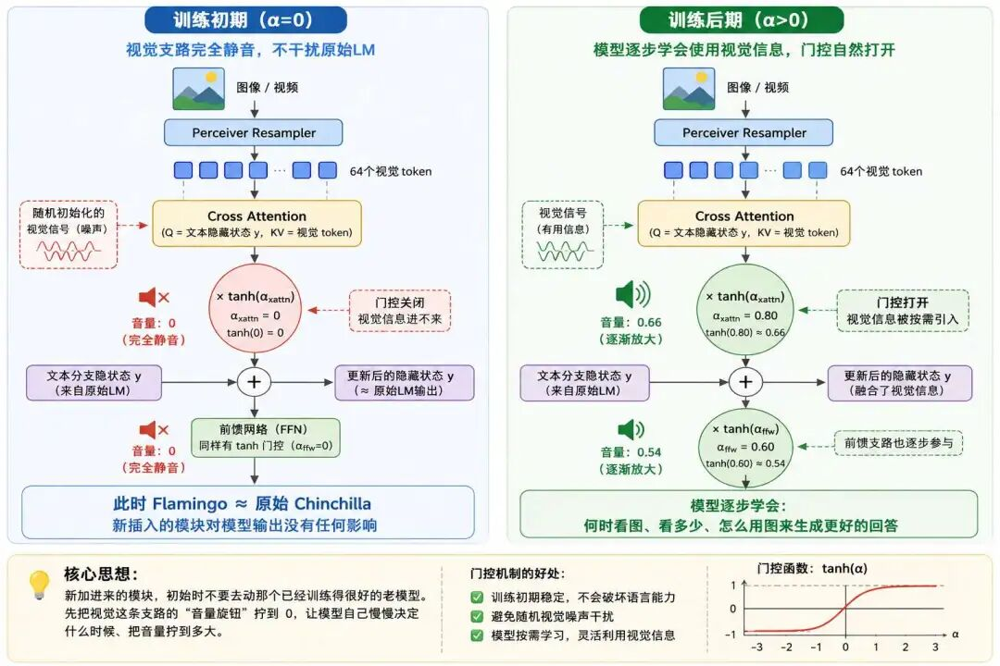

“智能，就是化繁为简的能力。” —— 马文·明斯基
2021年，CLIP 横空出世，给多模态人工智能打下了"图文对齐"的地基，它用大规模弱监督对比学习证明了一件事：机器可以稳定地学到图像与文本之间的全局语义关联，零样本分类和跨模态检索从此变成了现实。
但在这块"对齐地基"上想盖楼，一个核心痛点始终绕不过去：模型能"认出"图中的猫和文本里的"猫"是同一个概念，却回答不了"图中的猫在做什么”或者是”这只猫的项圈是什么颜色"这类需要逻辑推理的问题。
这就像一本能精准匹配单词与图片的词典，查词很厉害，但你让它读完一篇图文结合的短文再回答问题，它就不行了。CLIP 及同期的多模态模型都停留在"语义关联"这一层，没有迈进"逻辑推导"那一步。
2022年，DeepMind 发布的 Flamingo 系列模型，第一次系统性地把这个僵局给打破了：它将成熟的大语言模型（LLM）与视觉编码器结合，通过创新的门控交叉注意力机制和多模态上下文学习（M-ICL），让多模态模型从"能对齐"迈向了"能思考"，成为首批真正具备少样本推理能力的视觉语言模型（VLM），也为后续 LLaVA、GPT-4V 等模型的发展奠定了核心设计思路。
本文我们就一步步来拆解：Flamingo 之前的多模态卡在哪里、它怎么把那些卡点解掉、它的表征学习和架构设计为什么是这种长相、训练上又做了哪些"反常规"的选择，以及为什么它的设计后来成了几乎所有 MLLM 的"通用蓝图"。
要理解Flamingo的核心价值，首先需要明确2022年之前多模态领域的"困局"：CLIP的对比学习对齐范式虽然解决了"如何让图像和文本在语义空间对齐"的问题，但这只是多模态智能的"入门级能力"。
人类的多模态认知，从来不是简单的"匹配"，而是"融合+推理"，看到一张"猫在沙发上睡觉"的图片，再结合"这只猫的主人是谁"的问题，我们会调动视觉信息（猫、沙发）、常识知识（猫的主人通常是饲养者），最终推导出答案。
CLIP的核心能力是全局语义对齐：它将图像和文本映射到同一个共享空间，通过计算特征相似度判断两者是否匹配。这种能力在零样本分类、跨模态检索等任务上表现出色，但在需要"理解+推理"的视觉问答（VQA）、图像描述生成等任务上，却显得力不从心。
这背后的卡点其实有三层，越往下越接近本质问题：
同期的其他多模态模型，要么延续了CLIP的双流对齐思路（如ALBEF），要么采用了早期的编解码架构（如BLIP），但都未能将"视觉理解"与"语言推理"深度结合，因为它们的核心仍是"对齐"，而非"推理"。
Flamingo的论文系统性地展示了多模态推理的核心内涵：模型需要能够接收多模态输入（图像+文本），并基于这些输入完成"知识整合、逻辑分析、答案生成"的完整流程。具体来说，多模态推理需要具备三个能力：
这一思路本质上是将大语言模型（LLM）的"上下文学习"能力，扩展到了多模态领域，让LLM拥有"视觉之眼"，既能看懂图像，又能保持原本的语言推理能力。
面对"推理缺口"，DeepMind没有选择"从零训练一个多模态大模型”。因为这在2022年的计算资源下几乎是不可能的，训练一个70B参数的LLM已需要数千张A100显卡。
然后计算资源永远不是制约AI发展的最关键因素，换个角度想：单模态模型的能力其实已经很强了，视觉模型很会"看"，语言模型很会"说"。我们真正缺的，其实是一座让它们能彼此通话的”桥梁”。
顺着这个思路，DeepMind 提出了 "冻结预训练模型+新增轻量交互组件" 的高效路线：
这种思路转变的核心逻辑是成熟的单模态预训练模型已经具备了强大的基础能力，多模态融合的关键不是"重建"，而是"连接"。
就像给一台高性能的计算机（LLM）加装一个高清摄像头（视觉编码器），再通过一个智能接口（Perceiver Resampler + 门控交叉注意力）将摄像头的信号传输到计算机中，让计算机能够处理视觉信息，这也是Flamingo能以相对较低的成本，实现突破性推理能力的核心原因。
讲完了 Flamingo 的整体思路，我们往里再走一层：它和 CLIP 在表征学习上，到底有什么本质不同？
表征学习是多模态模型的"灵魂"，它决定了模型如何理解和融合不同模态的信息。CLIP采用的是全局共享空间对齐，核心是"强制图像和文本进入同一个共享语义空间"；
而Flamingo采用的是协同表示+深度融合，核心是"保留各模态的特异性特征空间，同时通过交叉注意力实现局部语义融合"。这一范式的转变，正是Flamingo能实现推理的基础。
CLIP的对齐学习，本质上是一种"大一统"的对齐思路：它通过InfoNCE损失函数，迫使图像的全局特征与文本的全局特征在共享空间中尽可能接近。这种方式的优势是简单高效、泛化能力强，但局限也十分明显：
打个比方，CLIP的对齐就像把"中文"和"英文"都翻译成"世界语"，通过世界语来判断两者是否意思相同，但这种翻译会丢失中文的象形特征和英文的语法特征，也无法处理"局部短语"的精准对应。
Flamingo摒弃了CLIP"强制统一空间"的思路，转而采用"模态独立表征+局部动态融合"的协同模式。其核心逻辑可以概括为：让视觉特征和语言特征保持各自的"母语"（特异性空间），在需要推理时，通过"翻译官"（交叉注意力）实现局部的、动态的语义融合。
具体来说，协同表示包含两个核心层次：
这种方式的优势是兼顾了"模态特异性"和"跨模态关联性"：既保留了图像的空间信息和语言的推理能力，又能在需要时建立精准的局部关联，这正是推理任务所需要的核心能力。
Flamingo的协同表示，与人类的多感官融合认知逻辑高度一致。当我们看到一张图片并回答问题时，大脑的处理过程是这样的：
如果用人类的认知来类比，CLIP的对齐就像"把视觉和语言信息都转换成同一种神经信号"，而Flamingo的协同表示就像"视觉和语言的神经信号各自传输，在需要时通过突触建立局部连接"，后者显然更符合人类的认知规律，也更适合处理复杂的推理任务。
在技术层面，Flamingo的协同表示是通过"视觉特征压缩+门控注意力筛选"实现的。具体步骤如下：
通过这一过程，Flamingo的协同表示不再是"静态的对齐"，而是"动态的推理融合"，视觉特征不再是简单的输入，而是作为"推理素材"，被语言模型根据具体问题灵活使用。
Flamingo的模型架构是其实现"低成本、高性能"推理的核心，它是双流架构的"推理增强版"，核心创新是 "冻结预训练主干+插入Perceiver Resampler与门控交叉注意力层" 的设计。
这种架构既复用了单模态预训练模型的强大能力，又通过轻量组件实现了模态间的深度交互，在性能与成本之间取得了出色的平衡。
2022年，大语言模型的规模已经达到了数百亿参数（如Chinchilla-70B、PaLM-540B），训练这样的模型需要消耗数千万美元的计算资源。
如果要从零训练一个"视觉+语言"的多模态大模型，计算成本将是天文数字，这也是当时多模态模型难以突破的"算力瓶颈"。
所以问题就变成了一个非常具体的工程问题：如何在不重新训练大模型的前提下，让它具备视觉理解能力？ DeepMind 的答案干脆利落，不碰大模型的核心参数，只在其中插入轻量的交互组件。
这种"增量式创新"的思路，不仅大幅降低了训练成本，还能最大程度保留大模型原本的语言推理能力。
Flamingo的架构整体上仍属于双流架构（模态分离编码、后期交互融合），但在CLIP的基础上做了关键升级，从”双流对齐"升级为"双流推理" 。其完整架构由四个核心组件组成，形成了一条清晰的"视觉→压缩→融合→推理"的流水线：
Flamingo选择直接冻结一个预训练好的NFNet-F6（Normalizer-Free ResNet F6）视觉编码器，没有做任何参数更新。
这个视觉编码器是DeepMind自己预训练的：先用CLIP式的双向对比损失（图文匹配），把NFNet-F6与一个BERT文本编码器配对训练对齐到共享语义空间，然后丢弃文本侧，只保留并冻结视觉侧。
这一选择的原因有两点：
视觉编码器的输入是图像（或视频帧），输出是一个二维空间特征图，再被展平成一维的视觉特征序列，作为后续交互的"原始视觉素材"。
Perceiver Resampler是Flamingo架构的关键创新之一，借鉴自DeepMind此前的Perceiver模型。它的作用是把视觉编码器输出的变长特征序列：图像分辨率不同、视频帧数不同，长度差异很大，压缩为固定数量（64个）的视觉token。
其工作机制是：用一组可学习的latent向量作为Query，把视觉特征作为Key/Value，通过多层交叉注意力，将"任意长度"的视觉信息聚合到"64个固定token"中。这样设计有两个好处：
Perceiver Resampler在Flamingo中是从零训练的，参数量相对较小，是连接"视觉感知"和"语言推理"的第一道桥梁。
Flamingo的语言核心是冻结的Chinchilla家族大语言模型。Chinchilla是DeepMind在2022年提出的"计算最优"LLM家族，基于"参数与训练数据应同比例增长"的scaling law：70B参数搭配1.4万亿tokens，在语言推理、生成、常识理解等任务上展现出超越同期GPT-3的能力。
scaling law：模型性能会随着"参数量、训练数据量、算力"这三者按一定比例同步增加而可预测地变好，简单讲就是"砸更多资源进去，效果会按规律提升，并且可以提前算出来能提升多少”。
选择冻结Chinchilla的原因与视觉编码器一致：复用其成熟的语言推理能力，同时避免重新训练的算力消耗。Chinchilla的核心是自回归Transformer解码器，能基于输入的token序列，生成逻辑通顺的自然语言文本，这是Flamingo能输出推理答案的"核心动力"。
如果说视觉编码器和语言解码器是Flamingo的"躯体"，那么门控交叉注意力层（GATED XATTN-DENSE）就是它的"灵魂"。这是Flamingo与之前所有多模态模型的核心区别，也是它能实现稳定训练与动态推理的关键。

门控交叉注意力的设计思路是在冻结的语言模型的Transformer层之间，按一定间隔插入一个新的"交叉注意力 + 前馈网络"模块，并为这两个子模块各配一个tanh门控。具体来说，它的核心计算可以表示为：
y = y + tanh(α_xattn) · CrossAttention(Q=y, KV=v_image)
y = y + tanh(α_ffw) · FeedForward(y)注释版：
$$ \underbrace{y}_{\text{文本分支隐藏状态}} = \underbrace{y}_{\text{文本分支隐藏状态}} + \underbrace{\tanh(\alpha_{\text{xattn}})}_{\text{交叉注意力门控权重}} \cdot \underbrace{\text{CrossAttention}(Q=y,\text{KV}=v_{\text{image}})}_{\text{以文本为Query、视觉Token为Key-Value的交叉注意力}} $$ $$ \underbrace{y}_{\text{更新后文本隐藏状态}} = \underbrace{y}_{\text{更新后文本隐藏状态}} + \underbrace{\tanh(\alpha_{\text{ffw}})}_{\text{前馈网络门控权重}} \cdot \underbrace{\text{FeedForward}(y)}_{\text{文本特征前馈变换模块}} $$其中y是文本侧的隐藏状态，v_image是Perceiver Resampler输出的64个视觉token，α_xattn和α_ffw是每层各一个的可学习标量，初始化为0。
这个设计有一个非常巧妙的性质：训练开始时，因为α=0，tanh(α)=0，所以新插入的两条支路对原始LM的隐藏状态毫无影响，整个Flamingo在初始时刻"等价于原始的Chinchilla”，这就保证了以下两点：
这背后其实是一个非常朴素的工程直觉：新加进来的模块，初始时候不要去动那个已经训练得很好的老模型。如果一开始就让随机初始化的交叉注意力把它的"噪声"灌进去，原本在 Chinchilla 里好不容易学到的那些语言能力很可能瞬间就被搅乱，训练直接崩。
tanh + 标量 + 0 初始化这套组合，等于先把视觉这条支路的"音量旋钮"拧到 0，然后让模型自己慢慢决定什么时候、把音量拧到多大。
消融实验表明，去掉tanh门控会导致性能明显下降并伴随训练不稳定，这一设计是Flamingo能稳定训练的关键。
门控机制的作用，可以用一个 "渐进打开的智能阀门" 来类比。想象训练初期，这个阀门是完全关闭的，视觉信号进不到语言模型；
随着训练进行，模型逐渐发现"哦，看图能帮我更好地预测下一个词"，于是慢慢拧开阀门，让越来越多的视觉信息流入推理流程。

这种渐进式融合的机制，让Flamingo避免了视觉信息对纯语言能力的破坏，同时也让模型能在需要时精准引入视觉信号。
举个具体的例子：当输入"图中有一只猫，它在睡觉吗？"时，训练好的模型会让交叉注意力路径活跃起来，聚焦于图像中猫的动作区域，计算该区域与"睡觉"的语义关联；
当输入纯文本的常识问题"猫有几条腿？"时，由于上下文没有图像，交叉注意力路径自然不会贡献额外信息，Chinchilla直接基于语言知识输出"4条"。
Flamingo的"冻结主干+插入轻量组件"的架构设计，带来了三大核心优势：
但这种设计也存在必然的妥协：
如果说架构是Flamingo的"骨架"，那么预训练与微调就是它的"肌肉”，通过合理的训练策略，Flamingo不仅实现了视觉与语言的局部融合，更掌握了"多模态上下文学习"（M-ICL）的核心能力，让模型能够通过少量示例完成新的推理任务。
与一些教科书式描述不同，Flamingo主体训练没有采用复杂的多阶段或多任务训练，而是采用了一个非常干净的目标：多模态自回归语言建模（next-token prediction）。
为什么不需要多阶段？因为视觉编码器已经预训练好了、语言模型也已经预训练好了，这两端的"基本功"早就练完了。
剩下要学的，无非是"看到图之后，下一个字该往哪儿写"这一件事，而这件事本身就是 LM 最熟悉的自回归预测，完全可以在一个统一目标下解决。
具体来说，模型的输入是一段"图像/视频与文本交错"的序列，目标是基于已有的图像与已生成的文本，预测下一个文本token。损失函数是各数据集加权的负对数似然之和：
$$ \mathcal{L} = \sum_{m=1}^{M} \lambda_m \cdot \mathbb{E}_{(x, y) \sim \mathcal{D}_m} \left[ -\sum_{\ell=1}^{L} \log p(y_\ell \mid y_{<\ell}, x_{\leq \ell}) \right] $$注释版：
$$ \underbrace{\mathcal{L}}_{\text{多任务总损失函数}} = \underbrace{\sum_{m=1}^{M}}_{\text{对所有任务求和}} \underbrace{\lambda_m}_{\text{第}m\text{个任务的损失权重}} \cdot \underbrace{\mathbb{E}_{(x, y) \sim \mathcal{D}_m}}_{\text{在第}m\text{个任务数据集上求期望}} \left[ - \underbrace{\sum_{\ell=1}^{L}}_{\text{对序列所有位置求和}} \underbrace{\log p(y_\ell \mid y_{<\ell}, x_{\leq \ell})}_{\text{第}\ell\text{步条件对数似然}} \right] $$其中 $\mathcal{D}_m$ 是第 $m$ 个训练数据集，$\lambda_m$ 是其权重。这一统一目标既让模型学会了"看图说话"的生成能力，也通过交错图文数据培养出了多模态上下文学习能力。
Flamingo的预训练数据是其能实现少样本推理能力的关键之一，DeepMind精心构建并混合了四类数据集：
四个数据集的混合权重（M3W:ALIGN:LTIP:VTP = 1.0:0.2:0.2:0.03）经过精心调优。论文消融实验表明，去掉M3W会导致性能下降约17%，去掉图文对数据下降约9.8%，去掉视频数据则严重影响所有视频任务，这种"交错图文+图文对+视频"的多源混合，是Flamingo数据策略的精髓。
Flamingo的预训练最核心的成果，是让模型涌现出了多模态上下文学习（Multimodal In-Context Learning, M-ICL）能力，这是Flamingo能实现少样本推理的关键，也是多模态模型从"监督学习"迈向"少样本学习"的里程碑。
单模态大语言模型（如GPT-3、Chinchilla）的上下文学习（ICL）能力，是指模型能通过"文本例题"（如"2+2=4，3+3=6，4+4=？"），快速学会新的任务，无需微调。
而Flamingo的M-ICL能力，是将这种能力扩展到了多模态领域，模型能通过"多模态例题"（图像+问题+回答），快速适配新的视觉问答任务。
例如，在没有经过任何微调的情况下，给Flamingo输入以下示例：
示例1：[图像1：一只猫在玩球] Q：图中的猫在做什么？ A：图中的猫在玩球。
示例2：[图像2：一只狗在追蝴蝶] Q：图中的狗在做什么？ A：图中的狗在追蝴蝶。
新问题：[图像3：一只鸟在树上唱歌] Q：图中的鸟在做什么？Flamingo能够输出正确的答案："图中的鸟在树上唱歌。"，这就是M-ICL能力的体现。
为什么Flamingo能实现多模态上下文学习？答案的核心不在某个特殊的训练技巧，而在M3W这种交错图文数据的本质属性。
想想 M3W 是什么：从 4300 万张真实网页里扒下来的图文混排内容。一篇科普博客可能是"一段文字、一张图、一段文字、又一张图"；一个商品页可能是"产品图、产品名、用户评论、相关推荐图"。这些网页天然就是图—文—图—文 反复出现的示例式结构 。
模型在自回归预测下一个 token 的时候，会发现一个事实：只看眼前这一对图文是不够的，前面那些图和文里藏着关键线索。要把下一个字预测准，就必须学会"回头看看前面的几对图文示例长什么样、它们的模式是什么"。换句话说，模型是被这个训练信号"逼出"上下文学习能力的。
这种"被迫从交错序列中归纳模式"的训练动力，正是M-ICL能力的源头，它不是显式被训练出来的，而是从大规模交错数据 + 自回归目标中涌现出来的，与GPT-3的文本ICL异曲同工。
对于希望追求最高性能的下游任务，Flamingo也支持轻量微调。微调时，仍然冻结视觉编码器和语言解码器的所有参数，只更新Perceiver Resampler和门控交叉注意力层。这种策略的优势是：
不过Flamingo最具特色的用法仍是无需微调的少样本提示，这才是它真正打开多模态推理新范式的地方。
作为多模态推理的"先驱"，Flamingo的贡献是开创性的，但受限于2022年的技术水平和资源约束，它也存在诸多局限。有意思的是， 这些局限几乎一对一地，就是后来一代代多模态模型要解决的问题。我们把这些局限和后续的"对应解法"放在一起看，会比单独看清单更有启发。
Flamingo最大的局限是闭源：它的语言核心依赖DeepMind的闭源模型Chinchilla，视觉编码器也是DeepMind自己预训练的闭源NFNet-F6，整个模型从未公开权重。这导致Flamingo只能作为学术演示，无法被中小企业和开发者直接使用。
这一局限直接催生了开源社区的复刻浪潮：2023年LAION联合多家高校发布的OpenFlamingo，以及Hugging Face发布的IDEFICS，都用开源组件复现了Flamingo的设计思想，让"Flamingo式架构"得以在开源生态中延续。
Flamingo通过Perceiver Resampler将视觉信息压缩为64个token，这一设计虽然换来了计算效率，但也带来了信息瓶颈，导致Flamingo在以下任务中表现不佳：
后续的模型（如LLaVA）通过保留更多视觉token、采用更高分辨率的视觉编码器，缓解了这一问题。
Flamingo的视觉编码器在主训练阶段完全冻结，意味着即使下游任务有大量数据可用，视觉表征也无法被针对性优化，这限制了模型在某些垂直领域（如医学影像、卫星图像）的表现。
后续的模型（如LLaVA-1.5、InternVL）则尝试在指令微调阶段对视觉编码器做轻量解冻，让视觉表征能够更好地服务于具体任务。
Flamingo的预训练主要聚焦于"视觉-文本的自回归建模"和"基础生成能力"，没有进行指令调优和基于人类反馈的强化学习（RLHF）。这导致Flamingo无法精准跟随人类的复杂指令，生成的回答也缺乏人类偏好（如语气、风格的适配）。
例如，当用户要求"用悲伤的语气描述这张图片"时，Flamingo可能会生成中性的描述，无法满足语气要求。后续的模型（如LLaVA、GPT-4V）通过多模态指令调优和RLHF，解决了这一问题，让模型的生成能力更符合人类意图。
Flamingo支持图像、视频和文本，但不支持音频、3D点云等其他模态。这与多模态人工智能的最终目标，"融合所有模态，像人类一样感知世界"，还有不小的距离。
后续的模型（如GPT-4o、Qwen2-Audio、Qwen3-Omni）逐步扩展了模态支持，从图文与视频到音频，最终走向全模态的融合。
尽管存在诸多局限，Flamingo仍然是多模态人工智能发展史上的里程碑式模型。它的核心设计思路："冻结预训练单模态模型 + 新增轻量跨模态交互组件"，成为了后续大量多模态大语言模型（MLLM）的"设计蓝图"，深刻影响了开源和闭源两大生态的发展。
值得注意的是，后续多模态大模型并非全部沿用Flamingo的门控交叉注意力路线，而是分化出了几种不同的"视觉—语言桥接"范式：
这三种路线各有优劣：交叉注意力融合更深，但参数量较大；Q-Former灵活轻量，但需要专门训练；线性投影最简单直接，性价比极高，也因此让LLaVA系列成为了开源多模态社区的事实标准。
回头看其实挺有意思，最早做出来的 Flamingo 用的是最复杂的桥接，最后赢得开源社区的反而是最简单的线性投影。
这并不是说 Flamingo 走错了路，而是说：当 LLM 本身已经强到一定程度、视觉编码器又被 CLIP 这类模型预对齐到接近语言空间时，"强行精雕细琢一座桥"的边际收益就越来越小，简单粗暴的"把视觉 token 当语言 token 拼进去"反而够用了。
这是技术演化里很常见的一个规律：早期方案为了把事情做出来，必须复杂；后期方案因为前提变好了，反而能简单。
但无论哪种路线，它们的共同祖先都是Flamingo开创的"冻结主干 + 轻量桥接"思想。
在Flamingo之前，多模态模型的训练思路主流是"从零训练"或"全量微调"，要么从头训练一个多模态模型，要么对预训练模型进行全参数微调。这种思路的成本极高，难以规模化。
Flamingo的"冻结预训练模型 + 轻量交互组件 + 多模态自回归预训练"这套范式，彻底改变了这一局面：它证明了"复用成熟的单模态预训练模型，通过轻量组件实现跨模态融合"是一条高效、低成本的路径，并且能涌现出少样本上下文学习这种"看似神奇"的能力。这一范式，成为了后续绝大多数MLLM的标准做法，大幅降低了多模态模型的研发成本，推动了技术的工业化落地。
Flamingo的出现，是多模态人工智能发展史上的一个重要转折点。它首次将多模态技术从"语义对齐"推向了"逻辑推理"，证明了"大语言模型 + 视觉编码器 + 轻量桥接"的组合可以实现强大的多模态推理能力，为后续所有多模态大语言模型的发展奠定了"设计蓝图"。
回顾Flamingo的核心贡献，可以概括为三点：
尽管Flamingo存在闭源、细粒度融合不足、指令跟随能力弱等局限，但它的核心思想：”让大语言模型拥有视觉之眼”，却成为了多模态人工智能的核心发展方向。
回头看，Flamingo就像多模态大模型时代的"奠基石”，它或许不是最强大的，也不是最通用的，但它是第一个清晰地告诉整个领域："只要把强大的LLM、强大的视觉编码器、再加一座轻巧的桥连起来，多模态智能就能涌现出来。”而这一技术洞见，至今仍在每一代多模态大模型的设计中隐隐涌现。